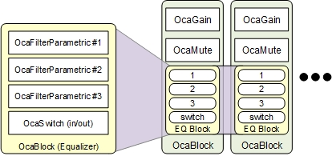
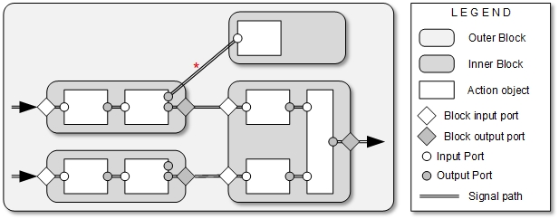

Contents
Introduction
AES70 defines a nestable container class named OcaBlock that's useful for organizing control objects into meaningful groups and subgroups. For example, here's part of an AES70-controllable audio device. The picture shows two channels, each with a gain control, a mute function, and a three-band equalizer. Each channel is contained in its own OcaBlock instance ("Block"). As well, the equalizer is defined as a Block that's instantiated inside each channel Block.

Nested Blocks
A detailed description of the Block feature is in the "Blocks" clause of the AES70-1 standard. Formal definitions of OcaBlock and a related class OcaBlockFactory are in Annex A of the AES70-2 standard, the UML specification of the AES70 class tree.
Features
Blocks can contain two kinds of objects:- Action objects. Objects that perform control and/or monitoring functions, or affect the flow of control.
- Dataset objects. Objects that give controllers access to data stored in the Device.
The AES70 Block feature offers a rich set of optional features, not just simple object containment. They are:
- Action object enumeration and searching. A controller can query a Block to discover the action objects it contains. Various search functions are available, to allow search for specific action objects by name or role.
- Dataset object enumeration and searching. A controller can query a Block to discover the dataset objects it contains. Various search functions are available, to allow search for specific dataset objects by name or role.
- Configurability options. The object population of a Block may be defined at time of device manufacture, or, for software-based devices, by controllers at run time. For configurable devices, controllers can even create and delete whole blocks. OcaBlock offers configuration options to cover all the cases.
- Action object creation and deletion. For sufficiently configurable Blocks, a controller can add action objects to a Block, or delete them from a Block.
- Dataset object creation and deletion. For sufficiently Configurable Blocks, a controller can add dataset objects to a Block, or delete them from a Block.
- Signal path modeling and control. For sufficiently Configurable Blocks, a controller can add, change, and delete signal paths inside a Block.
- Hierarchical object naming (the Rolepath feature). The Rolepath feature allows identifying objects uniquely by hierarchical names, much as files are identified in a hierarchical file system.
- Stored parameter support. This feature allows controllers to identify standard modules (Blocks with known schemas) within a device, and to re-use code blocks already written for those modules.
- Automated Block creation. For configurable Devices, AES70 defines the OcaBlockFactory class. OcaBlockFactory objects allow a controller, using a single command, to cause the Device to construct a given Block, including its particular objects.
OcaBlock and OcaBlockFactory Properties and Methods
AES70's Block features are realized by the properties and methods of OcaBlock and in a few cases by OcaBlockFactory . Below is a list of those properties and methods, organized by feature. In the list:
- In the Type column, P denotes a property, M denotes a method.
- The Definition column is given in C-like pseudocode.
- Unless otherwise noted, the properties and methods belong to OcaBlock .
- Detailed method signatures are omitted for readability.
Complete details of OcaBlock and OcaBlockFactory are in the formal UML specification accessible from Annex A of the AES70-2 standard.
Action object enumeration and searching
See application note AN100, "Designing an AES70 Device" , for details on object identification, including Object Numbers, Roles, Rolepaths, and Labels.
| Type | Definition | Description |
|---|---|---|
| Enumeration | ||
| P | ActionObjects | Collection of identifiers of Action Objects in the Block |
| M | GetActionObjects(..) | Returns list of Action Objects in the Block |
| M | GetActionObjectsRecursive(..) | Returns list of Action Objects in the Block and all the Blocks it contains, down to the lowest nesting level. |
| Searching | ||
| M | FindActionObjectsByRole(..) | Finds all Action Objects in the Block that have the given Role name and Class ID. |
| M | FindActionObjectsByRoleRecursive(..) | Same as previous, except searches in all contained Blocks as well. |
Dataset object enumeration and searching
See application note AN105, "Datasets" for more information.
| Type | Definition | Description |
|---|---|---|
| Enumeration | ||
| P | DatasetObjects | List of identifiers of Action Objects in the Block. |
| M | GetDatasetObjects(..) | Returns list of Dataset Objects in the Block |
| M | GetDatasetObjectsRecursive() | Returns list of Dataset Objects in the Block and all the Blocks it contains, down to the lowest nesting level. |
| Searching | ||
| M | FindDatasetObjectsByRole() | Finds all Dataset Objects in the Block that have the given name and/or MIME type. |
| M | FindDatasetsRecursive | Same as previous, except searches in all contained Blocks as well. |
Configurability options
See Configurable Blocks below.
| Type | Definition | Description |
|---|---|---|
| P | Configurability |
Bitstring specifying the Block's configurability at run time. Bit 0: 1 if Action Objects can be created/deleted. Bit 1: 1 if Signal Paths can be created/deleted. Bit 2: 1 if Dataset Objects can be created/deleted. |
Action object creation and deletion
See Configurable Blocks below.
| Type | Definition | Description |
|---|---|---|
| M | ConstructActionObject(..) | Adds a new Action Object to the Block |
| M | DeleteMember(..) | Deletes an Action Object or a Database Object from the Block |
Dataset object creation and deletion
See application note AN105, "Datasets" for details.
| Type | Definition | Description |
|---|---|---|
| M | ConstructDataset(..) | Adds a new Dataset Object to the Block |
| M | DuplicateDataset(..) | Creates a copy of a Dataset Object in the Block, and adds this copy to the Block |
| M | DeleteMember(..) | Deletes an Action Object or a Database Object from the Block |
Signal Flow Control
See Signal Flow Control below.
| Type | Definition | Description |
|---|---|---|
| P | SignalPaths | Collection of Signal Paths between Action Objects in the Block |
| M | GetSignalPaths(..) | Returns list of all Signal Paths in the Block |
| M | GetSignalPathsRecursive(..) | Returns list of Signal Paths in the Block and all the Blocks it contains, down to the lowest nesting level. |
| M | AddSignalPath(..) | Adds a new Signal Path to the Block. |
| M | DeleteSignalPath(..) | Deletes a Signal Path from the Block. |
Hierarchical object naming (the Rolepath feature)
See application note AN100, "Designing an AES70 Device" for more information about this feature.
| Type | Definition | Description |
|---|---|---|
| M | FindActionObjectsByRolePath(..) | Finds Action Objects with the given Rolepath |
The following property and method are inherited from OcaRoot , the AES70 base class:
| Type | Definition | Description |
|---|---|---|
| P | Role | The object's Role. For the $code('OcaBlock') object, the value is the Role of the Block itself. |
| M | GetRole(..) | Returns the value of the $code('Role') property. |
Stored parameter support
"Stored parameter support" refers to what is sometimes called "preset", "scene", or "cue" support: the ability to save sets of parameter values inside a device for quick recall when needed. See application note AN112, "Stored Parameters" for a full description of the AES70 stored parameter feature. Also see application note AN105, "Datasets" for details on Datasets.
| Type | Definition | Description |
|---|---|---|
| P | MostRecentParamDatasetONo | Object number of the parameter Dataset that was most recently applied to this Block. |
| M | GetMostRecentParamDatasetONo(..) | Returns the value of property MostRecentParamDatasetONo. |
| M | ApplyParamDataset(..) | Applies the specified parameter Dataset to this Block. |
| M | StoreCurrentParameterData(...) | Stores the values of all the properties of all the objects in the Block into a given Dataset. |
| M | FetchCurrentParameterData(..) | Returns the values of all the properties of all the objects in the Block in a single binary data element with an application-specific format. |
Reusable Block support
See Reusable Blocks below for more detail.
| Type | Definition | Description |
|---|---|---|
| P | GlobalType | The Block's Global Type identifier, a globally unique value that uniquely identifies this Block's configuration. |
| M | GetGlobalType | Returns the value of property GlobalType. |
Automated Block creation
See Block Factories below for more detail.
| Type | Definition | Description |
|---|---|---|
| P | BlockFactoryONo | Object number of Block Factory object that created this Block, or zero if the Block wasn't created by a Block Factory. |
| M | GetBlockFactoryONo(..) | Returns the value of property MostRecentParamDatasetONo. |
| M | ConstructBlockUsingFactory(..) | Using the designated Block Factory object, constructs a new Block, with all its contained objects, and adds it to the current Block. |
Configurable Blocks
Certain DSP-based signal processing devices allow controllers to create and delete Blocks and objects within them at run time. To support this, AES70 defines three kinds of Block configurability:
- Controllers may create and delete Action Objects.
- Controllers may create, update, and change Signal Paths.
- Controllers may create and delete Dataset Objects.
A Block's configurability is indicated by the value of the property OcaBlock.Configurability >. This property is a set of three bit flags:
- Bit 0: 1 if Action Objects can be created/deleted.
- Bit 1: 1 if Signal Paths can be created/deleted.
- Bit 2: 1 if Dataset Objects can be created/deleted.
The value of Configurability determines which object population management methods the Block supports. For example:
- If bit 0 is zero, then the OcaBlock methods ConstructActionObject(..) and ConstructActionObjectUsingFactory(..) will return a NotImplemented status if called.
- If bit 2 is zero, then the methods ConstructDataset(..) and DuplicateDataset(..) will return a NotImplemented status if called.
- If both bit 0 and bit 2 are zero, then the method DeleteMember(..) will return a NotImplemented status if called.
Configurability is not inherited by contained Blocks. For example, a Block that allows creation and deletion of Action Objects may contain nonconfigurable Blocks, and vice versa.
Signal Flow Control
The AES70 Signal Flow Control feature allows Controllers to discover and, in some cases, modify signal flows among processing elements inside a Block and among Blocks.
Ports
For defining Signal Flows, Action Objects with signal processing functions can have Ports. A Port is a software element that describes an input or output signal of the processing function an Action Object controls. Input Ports represent signal flows into the processing function; Output Ports represent signal flows out of the processing function.
An Action Objectcontrols or monitors a signal processing function is called a Worker. A Worker can have any number of Ports.
A Block that contains Workers is itself a Worker and can have Ports of its own, called Block Ports. Block Ports behave slightly differently from other Action Object Ports, as will be explained below.
Signal Paths
A Signal Path is an internal connection from:
- A Worker's Output Port to a Worker's Input Port, or
- A Block Input Port to a Worker's Input Port, or
- A Worker's Output Port to a Block Output Port.

Signal paths
The illustration shows the purpose of Block Ports. A Block port is a signal portal from the inside to the outside of the Block. It is possible to define a signal path directly into a Block from the outside (see the path marked with an * in the picture), in most cases it's cleaner to use Block Ports for signals that pass between Blocks.
Uses of Signal Paths
Signal Flow Control is an optional feature. It will normally be useful in the following cases:
- Non-Configurable Blocks whose signal flows need to be visible to controllers, perhaps for display purposes.
- Blocks whose signal flows can be configured by controllers at run time.
- Blocks that allow creation and deletion of Action Objects at run time.
In case (1), the Block's signal flow property OcaBlock.SignalFlow will be read-only. In cases (2) and (3), it will be read-write.
Clocking
When a device has multiple internal sample clocks, a controllers might need to manage the allocation of clocks to Ports. The AES70 datatype OcaPort , which defines the Port descriptor, supports this by storing the Object Number of the associated OcaMediaClock3 object. See application note AN113, "Timing and Clocks" for full details.
Reusable Blocks
The configuration of objects inside a Block is called a Block Schema, or just Schema.
If you're creating a line of AES70-controlled products, you'll probably have a number of Blocks that have the same schema in multiple products. For example, the three-band equalizer shown in the examples above might occur in various products.
To help manage the re-use of schemas, OcaBlock provides the property GlobalType . GlobalType uniquely identifies the schema globally. Its value is the combination of an originator's organization ID (see below) and a unique number chosen by that organization.
GlobalType has three benefits:
- It allows controllers to identify standard modules (Blocks with known schemas) within a device, and to re-use code blocks already written for those modules.
- It helps organize reusable schemas into both private and public libraries.
- It supports open sharing of schemas across manufacturers.
The format of GlobalType is defined by the AES70 datatype OcaGlobalTypeIdentifier , and is as follows (c-style pseudocode):
OcaOrganizationID Organization;
OcaUint32 ID;
where Organization is a 24-bit IEEE OUI (Organization Unique ID) or CID (Company ID) and ID may be freely chosen by the identified organization.
Block Factories
In some reconfigurable devices, Blocks with the same Schema may be instantiated and deleted many times while running. To avoid the need for controllers to build each such Block object-by-object, AES70 defines the OcaBlockFactory class, whose instances can create specific, fully-populated Blocks with a single call.
A OcaBlockFactory object ("Block Factory") is configured to construct a Block with a given schema. For example, to use Block Factory F1 for constructing a new Block inside a parent Block B1 , a controller calls B1 's method ConstructBlockUsingFactory(..) , identifying F1 as the factory to use. The result is a new Block B2 inside B1 , completely populated according to the given schema.
In operation, a Block Factory a set of prototypes that represent the members and signal paths of the Block to be created. When a controller instigates creation of the block, the prototypes are used as templates to create the actual population.
Block Factories may be defined at time of device manufacture or, if implementation permits, by controllers at runtime. For the latter case, OcaBlockFactory contains a complete set of methods that allow controllers to define the Factory's prototypes as desired.
For details, see the standards documents AES70-1, "Block Factories" section, and the formal class definition in AES70-2 Annex A.
References
AES70 standards
The following Audio Engineering Society standards define the AES70 Suite:
| ID | Current Version | Name |
| AES70-1 | 2024 | AES standard for audio applications of networks - Open Control Architecture - Part 1: Framework |
| AES70-2 | 2024 | AES standard for audio applications of networks - Open Control Architecture - Part 2: Class structure |
| AES70-3 | 2024 | AES standard for audio applications of networks - Open Control Architecture - Part 3: OCP.1 Binary protocol |
| AES70-4 | 2026 | AES standard for audio applications of networks - Open Control Architecture - Part 4: OCP.2 JSON-based protocol |
| AES70-21 | 2026 | AES standard for audio applications of networks - Open Control Architecture - Part 21: Using AES70 to manage AES67 and SMPTE ST 2110 30 media transport |
| AES70-22 | 2024 | AES standard for audio applications of networks - Open Control Architecture - Part 22: Using AES70 to manage Milan™ media transport |
| AES70-23 | 2026 | AES standard for audio applications of networks - Open Control Architecture - Part 23: Using AES70 to manage Dante® media transport |
Copies of these standards are available from the AES Standards Store, aes2.org/publications/standards-store.
AES standards documents are free to AES members. You're encouraged to join!
© OCA Alliance 2026